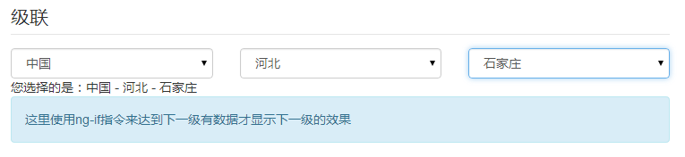

Beginning AngularJS
AngularJS 初探
by PaddingMe
2015-07-08
What is AngularJS?

Angularjs 是由 Google 维护，采用 JavaScript 语言编写的
开源客户端（clien-side） MVC 框架,帮助开发者编写
现代化的单页面应用（singal-page application）
现在版本 1.4
未来 2.0
适用场景
它尤其适合编写大量的 CRUD（增删改查）操作的，具有 Ajax 风格的富客户端应用。
Angularjs future
- 双向数据绑定
- 依赖注入
- MVC
- 自定义指令
Two-ways Binding
Demo: hello1.html
Demo: hello2.html
Demo: hello3.html
Demo: hello4.html
MVC ？ MVW ? MVVM
MVVM模式是Model-View-ViewMode模式的简称。由视图(View)、视图模型(ViewModel)、模型(Model)三部分组成，通过这三部分实现 UI逻辑、呈现逻辑和状态控制、数据与业务逻辑的分离。 Model将和ViewModel互动(通过$scope对象)，将监听Model的变化。这些可以通过View来发送和渲染，由HTML来展示你的 代码。View可以通过$routeProvider对象来支配，所以你可以深度的链接和组织你的View和Controller，将他们变成导航 URL。AngualrJS同时提供了无状态的Controller，可以用来初始化和控制$scope对象。 Model用于封装与应用程序的业务逻辑相关的数据以及对数据的处理方法。它具有对数据直接访问的权利，例如对数据库的访问，Model不依赖于View和ViewModel，也就是说，模型不关心会被如何显示或是如何被操作，模型也不能包含任何用户使用的与界面相关的逻辑。 ViewModel是一个用来提供特别数据和方法从而维护指定view的对象,。ViewModel是$scope的对象，只存在于AnguarJS的应用中。$scope只是一个简单的js对象，这个对象使用简单的API来侦测和广播状态变化。 Controller负责设置初始状态和参数化$scope方法用以控制行为。需要指出的controller并不保存状态也不和远程服务互动。 View是AngularJS解析后渲染和绑定后生成的HTML。这个部分帮助你创建web应用的架构。$scope拥有一个针对数据的参考，controller定义行为，view处理布局和互动。 ng-controller指令就是用来定义应用程序控制器的，并且同时创建了一个新的作用域关联到相应的DOM元素上。
DI
Diretive
html as template
Demo: clock
Service
filter
Route
Demo: route-Demo
How to write AngularJS
Thing in FE developing
传统前端开发思维
- 以JQuery为代表
- 以DOM为中心
- 关注VIEW层的变化和用户操作
- 「我有这样一个DOM，我想让它做XX」
新一代前端开发思维
- 以AngularJS为代表
- 以Data为中心
- 以JQuery为代表
- MVW = Model + View + WhatEver
实现一个下拉框(三级+级联)
jQuery程序猿
- 分别监控下拉框A/B/C的change事件
- 在事件中，取得下级的引用
- 查询符合上级筛选条件的下级数据
- 循环，更新下级的数据,更新下下级的数据
- ....
AngularJs philosophy
How to learn Angularjs

Superheroic
<thank-you>
Powered By reveal.js